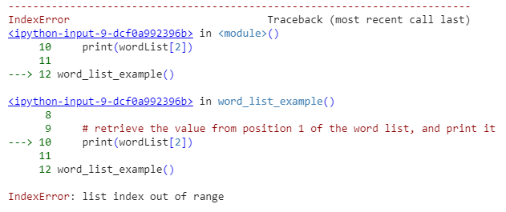

break
Comments have no impact on the execution of the program, i.e., the program works in the same way with the comments as it does without them.
The comment style displayed above that is intended for learning purposes is, however, too elaborate for real development, where the goal is for the source code to be **self documenting**. This means that the functionality of the program should be evident from the way classes, methods, and variables are named.
The example can be "commented out" by encapsulating the code into an appropriately named method. Below are two examples of methods that do this - one of the methods is more general in its purpose compared to the other. The more general method assumes, however, that the user knows which of the two parameters is assigned the higher value and which the lower.print(value)
value = value - 1
print(start)
start = start - 1
break
Had the program contained an error, print debugging could have been used to unravel its functionality by adding print statements in the appropriate places. The example below contains one possible example of a program containing print-debug statements.print("-- value is negative, exiting loop")
break
python
word1 = "Hello"
word2 = "world."
word3 = "How"
word4 = "are"
word5 = "you"
word6 = "today?"list_name = [], where the values to be stored in the list are included in the square brackets. We create a list for storing strings in the example below. "`python def main(): create a list my_list = [] the list isn't used yet "The type of the my_list variable islist`. The list can hold multiple variable types at each of its indices, in contrast to other programming languages such as Java where all the variables stored in a given list are of the same type. add, which takes the value to be added as a parameter. We then print the value at position zero. To retrieve a value from a certain position, you using my_list[2] syntax, where the square brackets are given the place of retrieval as a parameter. To call a list method you first write the name of the variable describing the list, followed by a dot and the name of the method. "`python def word_list_example(): create the word list wordList = [] add two values to the word list wordList.append("First") wordList.append("Second") retrieve the value from position 0 of the word list, and print it print(wordList[0]) word_list_example() "` Negative First As can be seen, this method retrieves the first value from the list when it is given the parameter 0. This is because list positions are counted starting from zero. The first value is found by wordList[0], the second by wordList[0], and so on. "`python def word_list_example():
create the word list
wordList = []
add two values to the word list
wordList.append("First") wordList.append("Second")
retrieve the value from position 1 of the word list, and print it
print(wordList[1]) word_list_example() "` Negative
Second You can also use negative indexing, which means beginning from the end. For example, -1 refers to the last item, -2 refers to the second last item and so on, as seen below: "`python def word_list_example():
create the word list
wordList = []
add two values to the word list
wordList.append("First") wordList.append("Second") wordList.append("Thirdd")
retrieve the value from the last position of the word list, and print it
print(wordList[-1]) word_list_example() "` Negative
Third Positive
Exercise - Third Element
Read the instructions for the exercise and commit the solution via Github.
Source files on Github Positive
Exercise - Second Plus Third
Read the instructions for the exercise and commit the solution via Github.
Source files on Github
If you try to retrieve information from a place that does not exist on the list, the program will print an IndexError. In the example below, two values are added to a list, after which there is an attempt to print the value at place two on the list. "`python def word_list_example():
create the word list
wordList = []
add two values to the word list
wordList.append("First") wordList.append("Second")
retrieve the value from position 1 of the word list, and print it
print(wordList[2]) word_list_example() "` Since the numbering (i.e., indexing) of the list elements starts with zero, the program isn't able to find anything at place two and its execution ends with an error. Below is a description of the error message caused by the program. Example output: Positive
A Place in a List Is Called an Index
Numbering places, i.e., indexing, always begins with zero. The list's first value is located at index 0, the second value at index 1, the third value at index 2, and so on. In programs, an index is denoted with a variable called i.
We'll next be examining methods that can be used to go through the values on a list. Let's start with a simple example where we print a list containing four values. python
teachers = []
teachers.append("Simon")
teachers.append("Samuel")
teachers.append("Ann")
teachers.append("Anna")
print(teachers[0])
print(teachers[1])
print(teachers[2])
print(teachers[3])
Negative
Simon
Samuel
Ann
Anna The example is obviously clumsy. What if there were more values on the list? Or fewer? What if we didn't know the number of values on the list? The number of values on a list is provided by the list's len method which returns the number of elements the list contains. The number is an integer, and it can be used as a part of an expression or stored in a variable for later use. python
list = []
print("Number of values on the list: " + str(len(list)))
list.append("First")
print("Number of values on the list: " +str(len(list)))
values = len(list)
list.append("Second")
print("Number of values on the list: " + str(values))
Negative
Number of values on the list: 0
Number of values on the list: 1
Number of values on the list: 1 Positive
Exercise - List size
Read the instructions for the exercise and commit the solution via Github.
Source files on Github
Let's make a new version of the program that prints each index manually. In this intermediate version we use the index variable to keep track of the place that is to be outputted. "`python teachers = [] teachers.append("Simon") teachers.append("Samuel") teachers.append("Ann") teachers.append("Anna") index = 0 if index < len(teachers): print(teachers[index]) # index = 0 index = index + 1 # index = 1 if index < len(teachers): print(teachers[index]) # index = 1 index = index + 1 # index = 2 if index < len(teachers): print(teachers[index]) # index = 2 index = index + 1 # index = 3 if index < len(teachers): print(teachers[index]) # index = 3 index = index + 1 # index = 4 if index < len(teachers):
this will not be executed since index = 4 and len(teachers) = 4
print(teachers[index]) index = index + 1 We can see that there's repetition in the program above.
We can convert the `if` statements into a `while` loop that is repeated until the condition `index < len(teachers)` no longer holds (i.e., the value of the variable `index` grows too great).
python teachers = [] teachers.append("Simon") teachers.append("Samuel") teachers.append("Ann") teachers.append("Anna") index = 0
Repeat for as long as the value of the variable index
is smaller than the size of the teachers list
while index < len(teachers): print(teachers[index]) index = index + 1 Now the printing works regardless of the number of elements.
The for-loop we inspected earlier used to iterate over a known number of elements is extremely handy here. We can convert the loop above to a `for`-loop, after which the program looks like this.
python teachers = [] teachers.append("Simon") teachers.append("Samuel") teachers.append("Ann") teachers.append("Anna") for index in range(len(teachers)): print(teachers[index]) "` Negative
Simon
Samuel
Ann
Anna Python actually has a "better" way of accessing list items in a for loop which is different to certain other languages. You can use the syntax for item in list to access each item like so: python
teachers = []
teachers.append("Simon")
teachers.append("Samuel")
teachers.append("Ann")
teachers.append("Anna")
for teacher in teachers:
print(teachers)
There are certain reasons why you'd use range(len(list)) but most of the time we will use the latter of these two options. Let's consider using a list to store integers. The functionality is largely the same as in the previous example. python
numbers = []
numbers.append(1)
numbers.append(2)
numbers.append(3)
numbers.append(4)
for number in numbers:
print(numbers)
Negative
1
2
3
4 Printing the numbers in the list in reverse order would also be straightforward. python
numbers = []
numbers.append(1)
numbers.append(2)
numbers.append(3)
numbers.append(4)
index = len(numbers) - 1
while index >= 0:
number = numbers[index]
print(number)
index = index - 1
Negative
4
3
2
1 Try and recreate the previous example with the for loop! Positive
Notice about the following exercises
The next exercises are meant for learning to use lists and indices. Even if you could complete the exercises without a list, concentrate on training to use it. The functionality in the exercises is to be implemented after reading the input numbers. Positive
Exercise - Last in list
Read the instructions for the exercise and commit the solution via Github.
Source files on Github Positive
Exercise - First and last
Read the instructions for the exercise and commit the solution via Github.
Source files on Github Positive
Exercise - Reember these numbers
Read the instructions for the exercise and commit the solution via Github.
Source files on Github Positive
Exercise - Only these numbers
Read the instructions for the exercise and commit the solution via Github.
Source files on Github Positive
Exercise - Greatest in list
Read the instructions for the exercise and commit the solution via Github.
Source files on Github Positive
Exercise - Index of
Read the instructions for the exercise and commit the solution via Github.
Source files on Github Positive
Exercise - Index of smallest
Read the instructions for the exercise and commit the solution via Github.
Source files on Github Positive
Exercise - Sum of a list
Read the instructions for the exercise and commit the solution via Github.
Source files on Github Positive
Exercise - Average of a list
Read the instructions for the exercise and commit the solution via Github.
Source files on Github
In Python, list's methods clear(), pop(), and remove() are used to remove items (elements) from a list.
python
my_list = list(range(10))
print(my_list)
print(my_list.pop(0))
print(my_list.pop(3))[0, 1, 2, 3, 4, 5, 6, 7, 8, 9]
[1, 2, 3, 4, 5, 6, 7, 8, 9]
[1, 2, 3, 5, 6, 7, 8, 9] Note that the list is edited in place, meaning that the value of my_list is overwritten by pop(). You can remove the first item from the list where its value is equal to the specified value with remove(). python
my_list = ['Alice', 'Bob', 'Charlie', 'Bob', 'Dave']
print(my_list)
print(my_list.remove('Alice'))
print(my_list.pop('Bob'))
Negative
[‘Alice', ‘Bob', ‘Charlie', ‘Bob', ‘Dave']
[‘Bob', ‘Charlie', ‘Bob', ‘Dave']
[‘Charlie', ‘Bob', ‘Dave'] Note that if the list contains more than one matching the specified value, only the first one is deleted. The list method in can be used to check the existence of a value in the list. The method receives the value to be searched as its parameter, and it returns a boolean type value (True or False) that indicates whether or not that value is stored in the list. "`python list = ["First","Second","Third"] print("Is the first found? " + str("First" in list)) found = "Second" in list if found: print("Second was found")
or more simply
if "Second" in list: print("Second can still be found") "` Negative
Is the first found? true
Second was found
Second can still be found Positive
Exercise - On the list
Read the instructions for the exercise and commit the solution via Github.
Source files on Github
Like other variables, a list can be used as a parameter to a method too. When the method is defined to take a list as a parameter, the type of the parameter is defined as the type of the list and the type of the values contained in that list. Below, the method print prints the values in the list one by one. "`python def printout(list): for value in list:
print(value)
my_list = ["One","Two"] printout(my_list) "` Negative
One
Two The chosen parameter in the method definition is not dependent on the list that is passed as parameter in the method call. In the program that calls printout, the name of the list variable is list, but inside the method printout the variable is called my_list – the name of the variable that stores the list could also be printables, for instance. It's also possible to define multiple variables for a method. In the example the method receives two parameters: a list of numbers and a threshold value. It then prints all the numbers in the list that are smaller than the second parameter. "`python def printSmallerThan(numbers, threshold): for number in numbers:
if (number < threshold):
print(number)
list = [1,2,3,2,1] printSmallerThan(list, 3) "` Negative
1
2
2
1 Positive
Exercise - Print in range
Read the instructions for the exercise and commit the solution via Github.
Source files on Github As before, a method can also return a value. The methods that return values have the return command. The method below returns the size of the list. python
def size(list):
return len(list)
You can also define own variables for methods. The method below calculates the average of the numbers in the list. If the list is empty, it returns the number -1. "`python def average(numbers): if (len(numbers) == 0):
return -1
sum = 0 for number in numbers:
sum = sum + number
return sum / len(numbers) } "` Positive
Exercise - Sum
Read the instructions for the exercise and commit the solution via Github.
Source files on Github
Earlier we have used integers, floating point numbers, etc. as method parameters. When variables such as int are used as method parameters, the value of the variable is copied for the method's use. The same occurs in the case that the parameter is a list. Lists, among practically all the variables that can store large amounts of information, are reference-type variables. This means that the value of the variable is a reference that points to the location that contains the information. When a list (or any reference-type variable) is copied for a method's use, the method receives the value of the list variable, i.e., a reference. In such a case the method receives a reference to the real value of a reference-type variable, and the method is able to modify the value of the original reference type variable, such as a list. In practice, the list that the method receives as a parameter is the same list that is used in the program that calls the method. Let's look at this briefly with the following method. "`python def removeFirst(numbers): if len(numbers) == 0:
return
numbers.pop(0) numbers = [3,2,6,-1] print(numbers) removeFirst(numbers) print(numbers) removeFirst(numbers) removeFirst(numbers) removeFirst(numbers) print(numbers) "` Negative
[3, 2, 6, -1]
[2, 6, -1]
[] Positive
Exercise - Remove last
Read the instructions for the exercise and commit the solution via Github.
Source files on Github